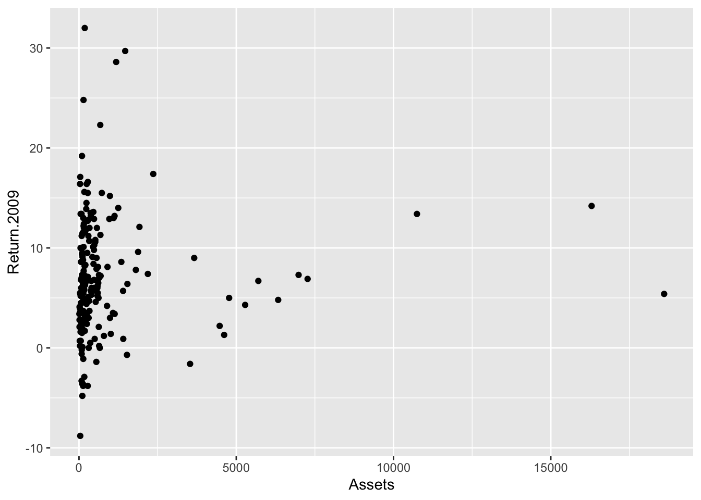
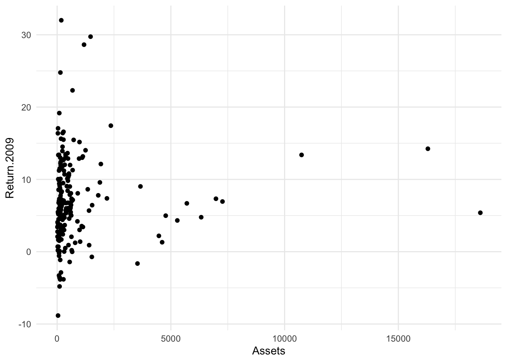
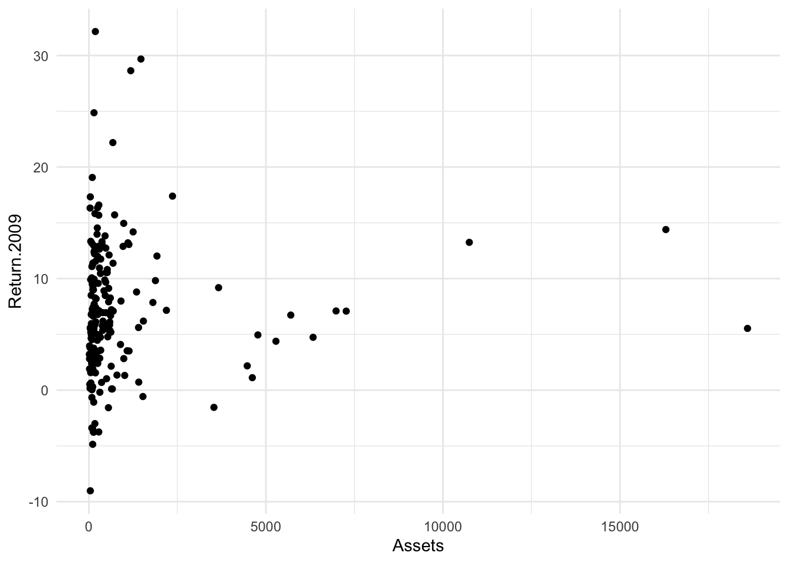
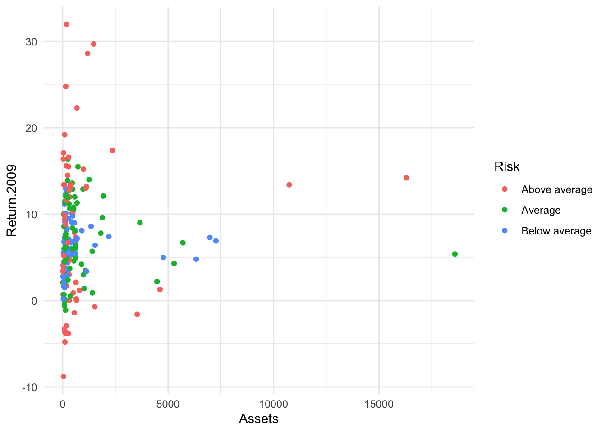
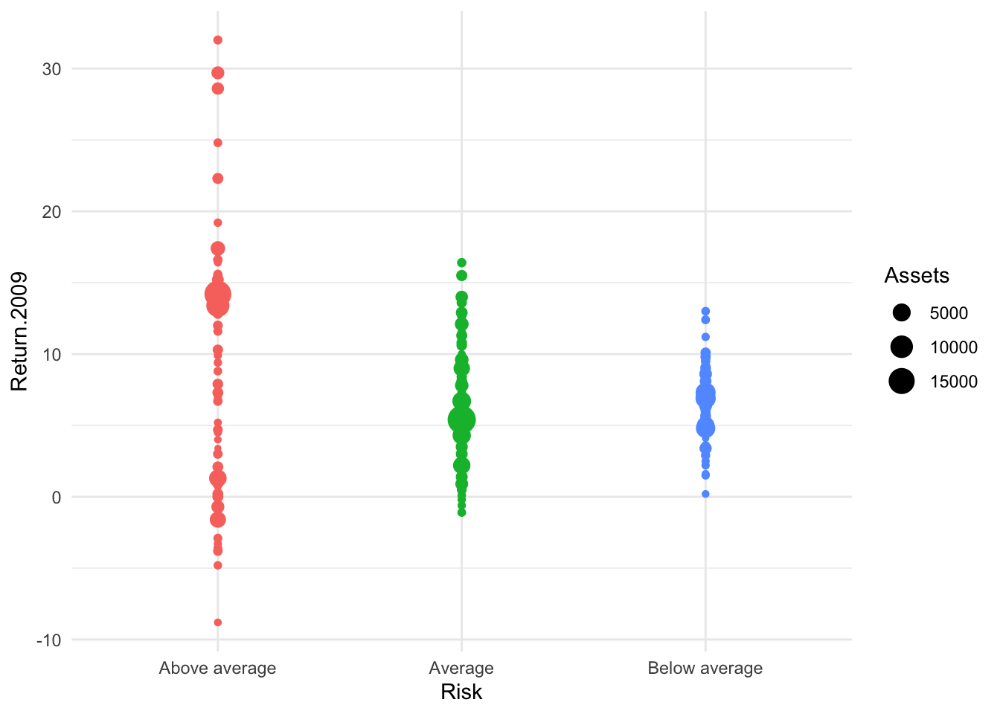
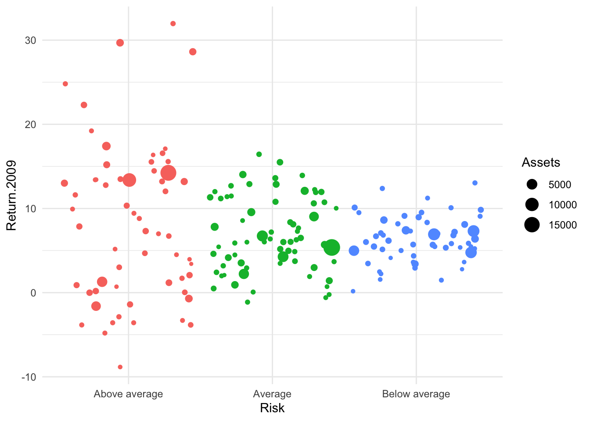
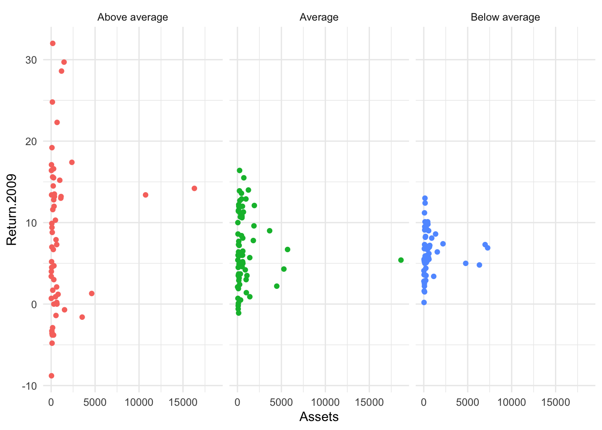

Bonds <- read.csv(url("https://raw.githubusercontent.com/robertwwalker/DADMStuff/master/BondFunds.csv"))Bonds
A dataset for illustrating the various available visualizations needs a certain degree of richness with manageable size. The dataset on Bonds contains three categorical and a few quantitative indicators sufficient to show what we might wish.
Loading the Data
A Summary
library(skimr)
Bonds %>%
skim()| Name | Piped data |
| Number of rows | 184 |
| Number of columns | 9 |
| _______________________ | |
| Column type frequency: | |
| character | 4 |
| numeric | 5 |
| ________________________ | |
| Group variables | None |
Variable type: character
| skim_variable | n_missing | complete_rate | min | max | empty | n_unique | whitespace |
|---|---|---|---|---|---|---|---|
| Fund.Number | 0 | 1 | 4 | 6 | 0 | 184 | 0 |
| Type | 0 | 1 | 20 | 23 | 0 | 2 | 0 |
| Fees | 0 | 1 | 2 | 3 | 0 | 2 | 0 |
| Risk | 0 | 1 | 7 | 13 | 0 | 3 | 0 |
Variable type: numeric
| skim_variable | n_missing | complete_rate | mean | sd | p0 | p25 | p50 | p75 | p100 | hist |
|---|---|---|---|---|---|---|---|---|---|---|
| Assets | 0 | 1 | 910.65 | 2253.27 | 12.40 | 113.72 | 268.4 | 621.95 | 18603.50 | ▇▁▁▁▁ |
| Expense.Ratio | 0 | 1 | 0.71 | 0.26 | 0.12 | 0.53 | 0.7 | 0.90 | 1.94 | ▂▇▅▁▁ |
| Return.2009 | 0 | 1 | 7.16 | 6.09 | -8.80 | 3.48 | 6.4 | 10.72 | 32.00 | ▁▇▅▁▁ |
| X3.Year.Return | 0 | 1 | 4.66 | 2.52 | -13.80 | 4.05 | 5.1 | 6.10 | 9.40 | ▁▁▁▅▇ |
| X5.Year.Return | 0 | 1 | 3.99 | 1.49 | -7.30 | 3.60 | 4.3 | 4.90 | 6.80 | ▁▁▁▅▇ |
Most data types are represented. There is no time variable so dates and the visualizations that go with time series are omitted.
Data Visualization
The primary visualization that we might use for a combination of two quantities is the scatterplot: geom_point(). I will also make use of facet. Let me work with Assets and Returns, then with Risk.
geom_point()
Bonds %>%
ggplot() + aes(x = Assets, y = Return.2009) + geom_point()
A little better: theming
I do not like the default theme.
Bonds %>%
ggplot() + aes(x = Assets, y = Return.2009) + geom_point() + theme_minimal()
Fixing Overplotting
ggplot has an alternative geometry known as geom_jitter() that jitters – adds arbitrarily small amounts to the x and y coordinates.
Bonds %>%
ggplot() + aes(x = Assets, y = Return.2009) + geom_jitter() + theme_minimal()
The two controls for the jitter are width:

Bonds %>%
ggplot() + aes(x = Assets, y = Return.2009) + geom_jitter(width = 0.25) + theme_minimal()
Bonds %>%
ggplot() + aes(x = Assets, y = Return.2009) + geom_jitter(height = 0.25) + theme_minimal()
and the height
 ## Some other elements
## Some other elements
Since I am going to work with Risk, let’s try that in color.
Bonds %>%
ggplot() + aes(x = Assets, y = Return.2009, color = Risk) + geom_point() + theme_minimal()
A bubble plot?
Now I will put Risk on x and Returns on y with the size of the bubble determined by Assets. First, without jitter.
Bonds %>%
ggplot() + aes(x = Risk, y = Return.2009, size = Assets, color = Risk) + geom_point() +
theme_minimal() + guides(color = "none")
Bonds %>%
ggplot() + aes(x = Risk, y = Return.2009, color = Risk, size = Assets) + geom_jitter(width = 0.45) +
theme_minimal() + guides(color = "none")
Deploying Facets
Bonds %>%
ggplot() + aes(x = Assets, y = Return.2009, color = Risk, facet = Risk) + geom_point() +
theme_minimal() + guides(color = "none") + facet_wrap(~Risk)